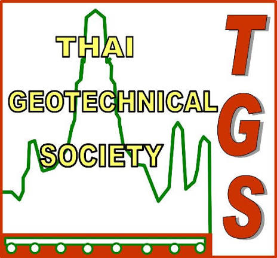
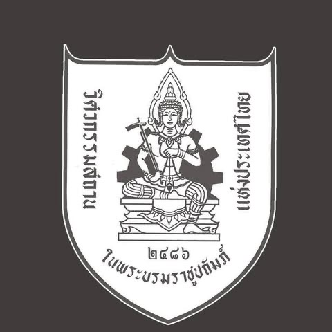
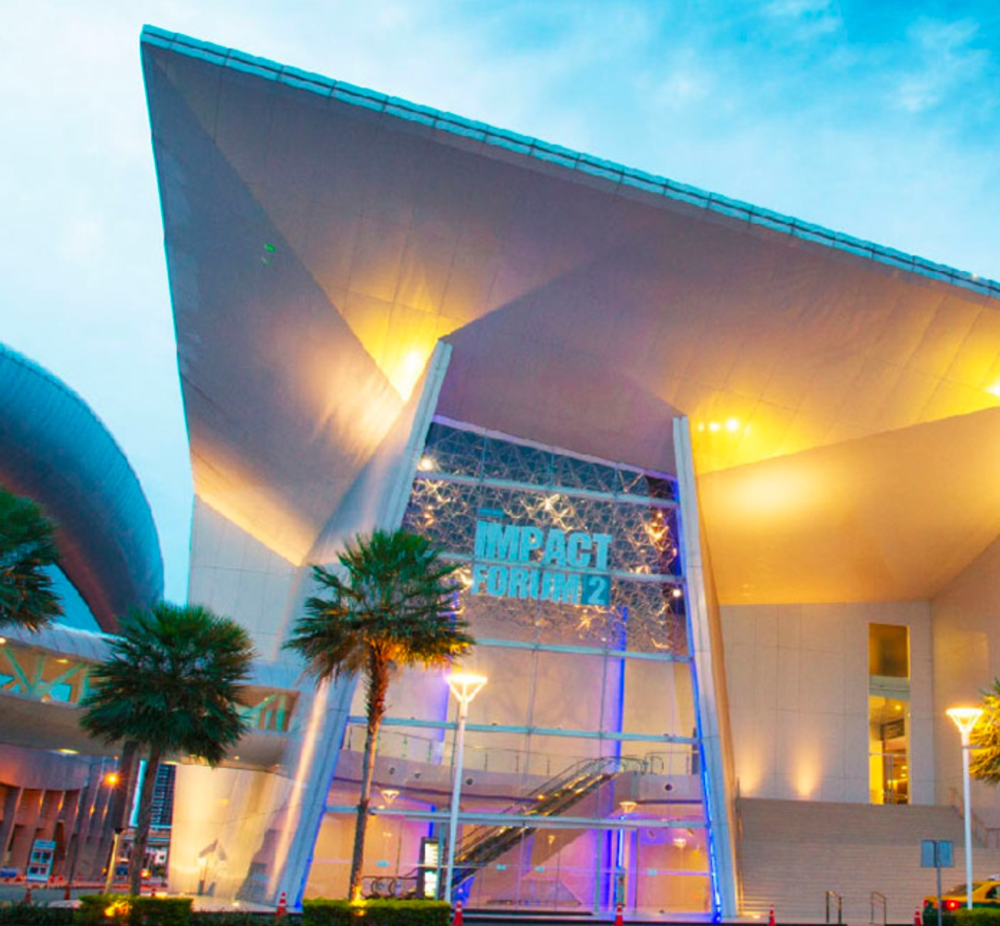
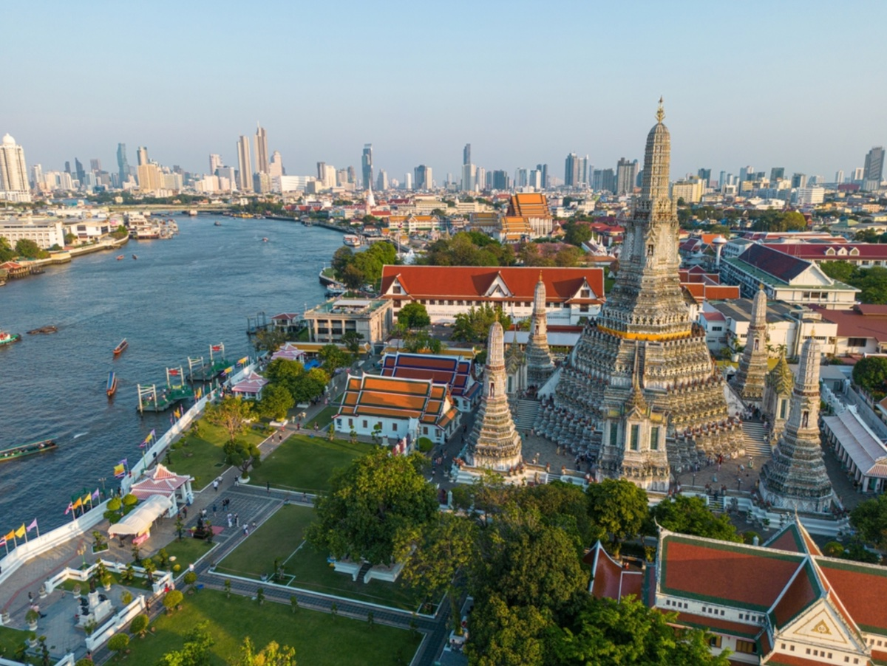
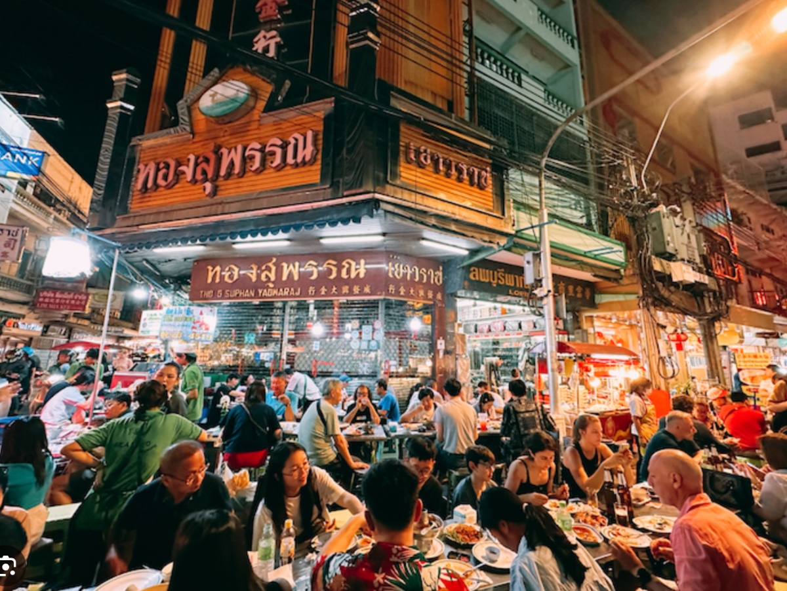
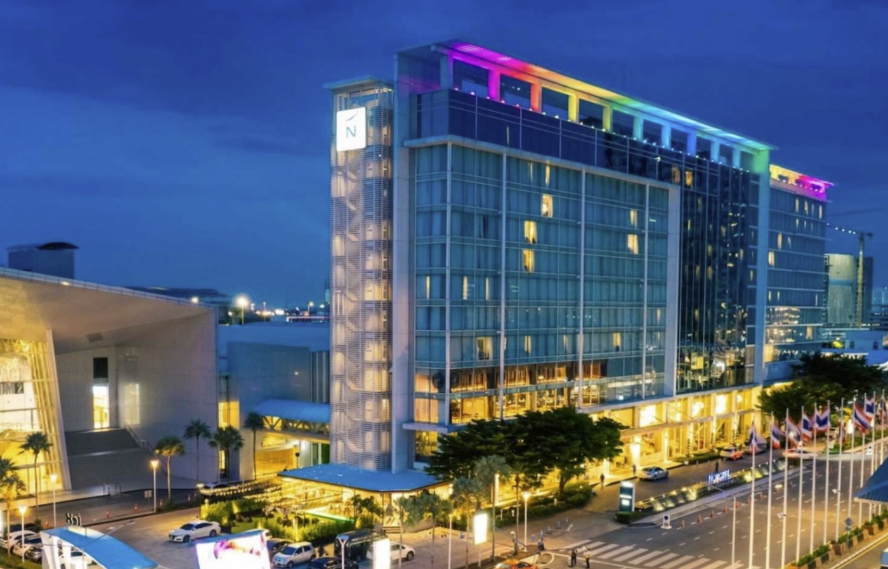
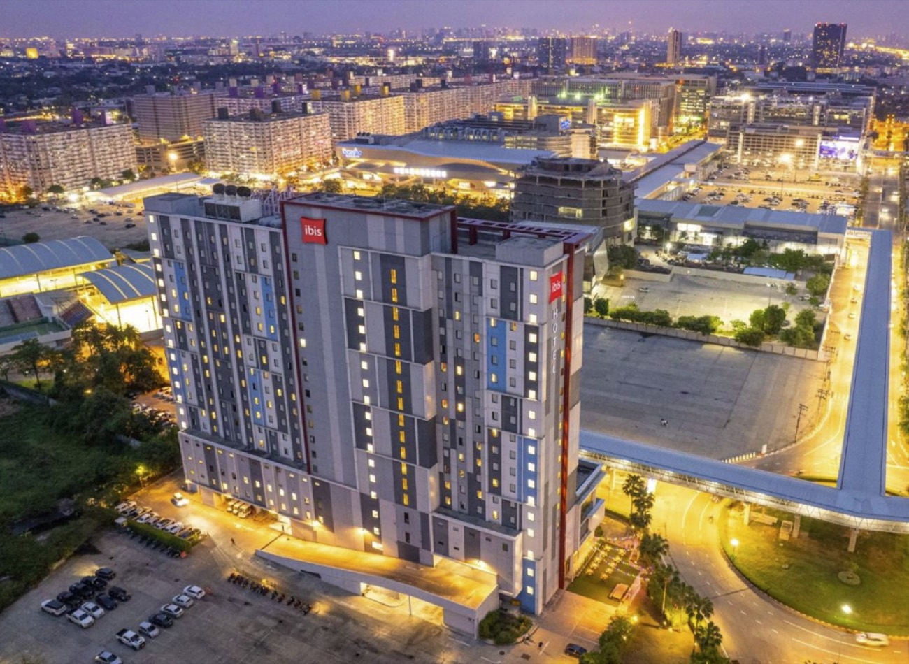

Advancing soil mechanics and geotechnical engineering across Asia. Hosted by the Thai Geotechnical Society under the ISSMGE, returning to Bangkok for the first time since 1991.
The Asian Regional Conference on Soil Mechanics and Geotechnical Engineering has convened the region's foremost researchers and practitioners since its first meeting in New Delhi in 1960. In 2023 the Thai Geotechnical Society was elected by ISSMGE member societies to host the 18th edition.
18ARC brings keynote lectures, technical sessions, ATC workshops, and an exhibition to Bangkok — a city whose soft-clay foundations, deep excavations, and mega-infrastructure make it a living laboratory for geotechnical engineering.
with the Engineering Institute of Thailand (EIT), under the auspices of the International Society for Soil Mechanics and Geotechnical Engineering (ISSMGE).


Asia is building faster, deeper, and smarter than ever — mega-cities rising on soft ground, infrastructure racing a changing climate, and an AI revolution reshaping how we sense, model, and design the subsurface. From machine learning and digital twins to low-carbon ground engineering, 18ARC convenes the region's brightest minds in Bangkok to define the next era of geotechnics. Papers are invited across the following tracks.
Peer-reviewed papers will be published in the conference proceedings by Springer and fully citation-indexed, as with previous editions of the series.
Dates are provisional and subject to confirmation by the Organising Committee.
Contributions are invited across all twelve conference tracks. The online submission portal opens in 2026 — join the mailing list below to be notified.
Proposals for ATC (Asian Technical Committee) workshops and special sessions are also welcomed — contact the secretariat.
Ask the secretariat →The detailed day-by-day programme will be announced later.
Fees include access to all technical sessions, the exhibition, conference proceedings, daily lunches, and the welcome reception. Prices in USD and provisional.
Extra banquet seats for accompanying guests: $50 per person.
The conference will be held at IMPACT Forum, Thailand’s largest exhibition and convention complex, in Muang Thong Thani on the northern edge of Bangkok. Delegates enjoy world-class hotels, street-food culture, and the temples of one of Asia's great capitals.
The monorail's two-station spur, opened in 2025, runs straight into the complex. Change at Muang Thong Thani station on the main Khae Rai – Min Buri line.



Both official conference hotels sit inside the IMPACT complex — no transfer, no traffic. Delegate rates open with registration.


Most delegates from across Asia and beyond enter Thailand easily; check your situation early and let the secretariat help with paperwork.
Entry rules change — always confirm current requirements with the Royal Thai Embassy or Consulate in your country before booking.
The Scientific and Local Organising Committees will be announced later.
Sponsorship and exhibition packages connect your organisation with 600+ engineers, academics, and decision-makers. The prospectus opens in 2026.
Join the mailing list for the First Announcement, deadline reminders, and registration opening. The First Announcement brochure will also be published here.